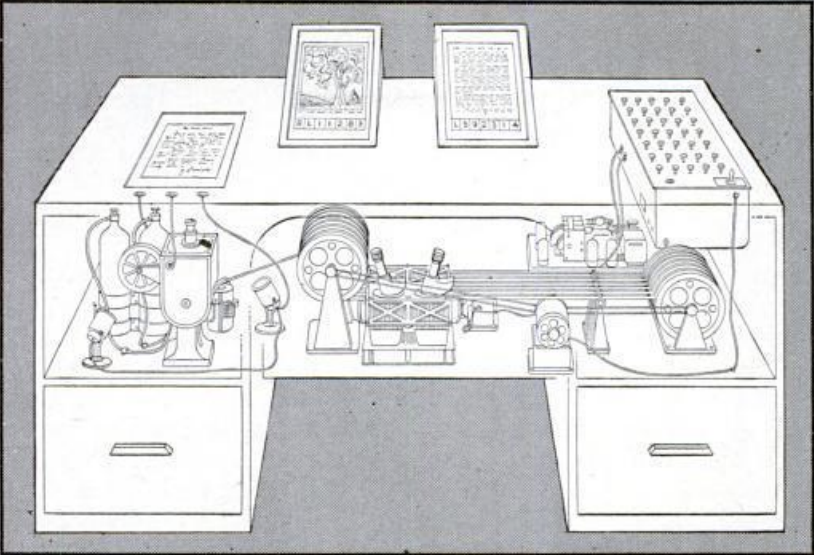
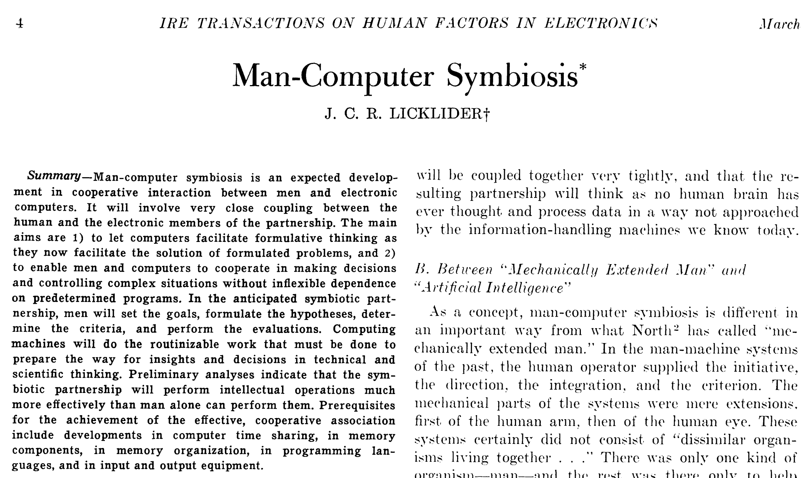
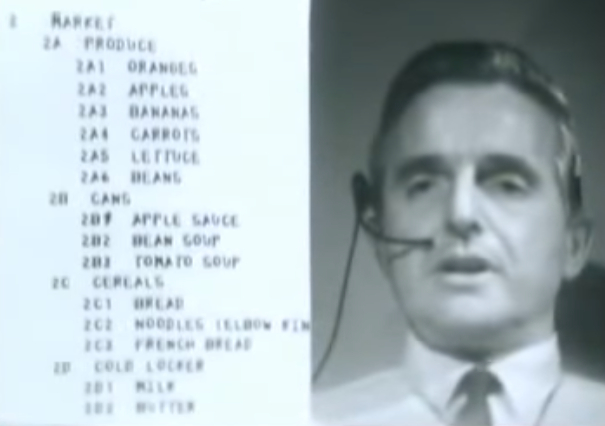
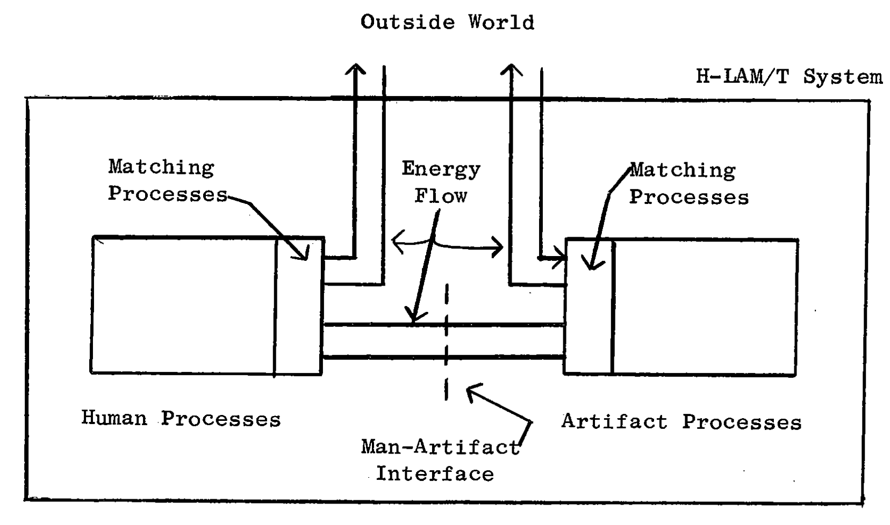

Post-WWII: bottleneck shifts from scientific knowledge production → consumption
Vannevar Bush, Manhattan Project, NSF

-
Bush argued the need for the Memex
Device to store all forms of data, and links between them
As We May Think, 1945 essay
Need for cooperative interaction between humans and machines
Joseph Carl Robnett Licklider, ARPA
-
Computers should not only automate calculations
Humans: creativity and intuition
Computers: precise calculations and information
Man-Computer Symbiosis, 1960 essay

Humans solving complex problems better by directly augmenting human cognition
-
Do not only focus on making computers more intelligent
Humans should also become better at solving complex problems
→ computer mouse, windowed interfaces, collaborative editing, …
Augmenting Human Intellect: A Conceptual Framework, 1962 report

Douglas Engelbart, Augmentation Research Center
